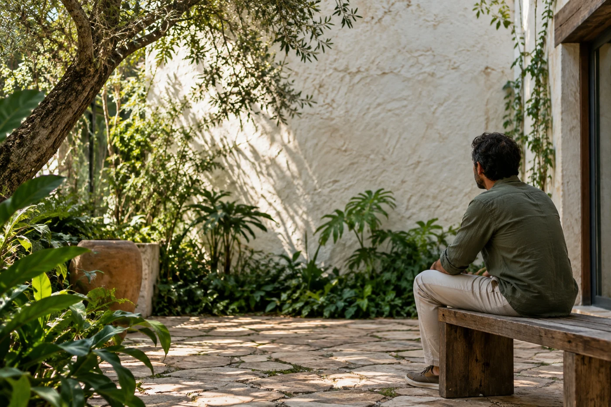
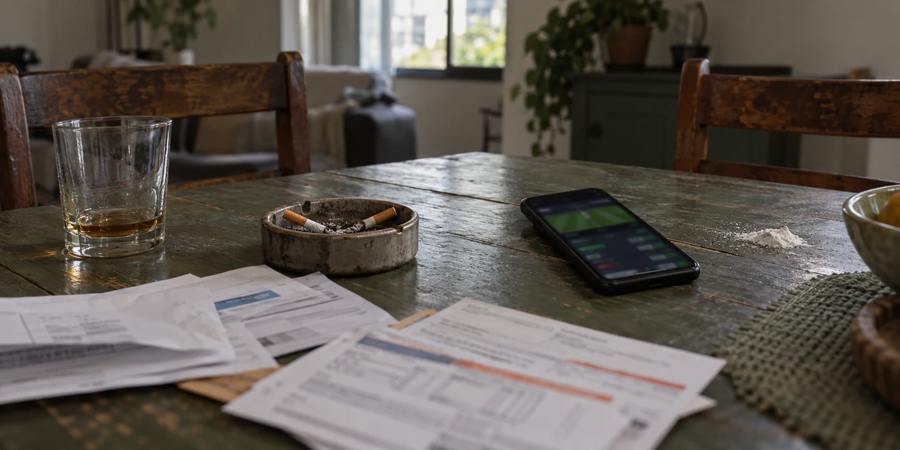
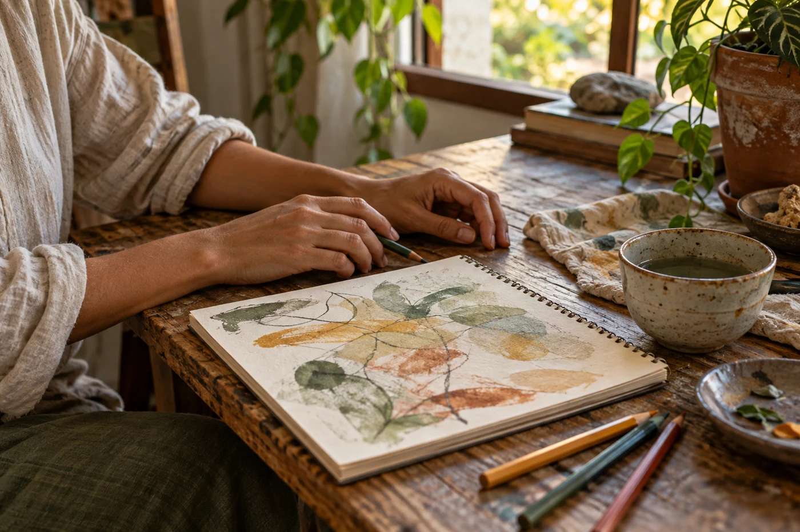

O orçamento da casa sente.
Gastos escondidos, dívidas e dificuldades para manter os compromissos podem trazer insegurança para todos.
Quando o álcool, a cocaína, o cigarro ou outras drogas passam a ocupar o centro da vida, o sofrimento também chega a quem está perto. Atendimento terapêutico com Daniel Sena para quem enfrenta a dependência e para as demandas da família.

Quem cuida também
precisa de apoio.Você pode começar essa conversa.
Mãe, pai, parceiro, irmão, amigo.
A sua preocupação também merece escuta.
Contas que deixam de ser pagas. Conversas que viram discussão. Promessas que já não trazem segurança. Quando a relação com uma substância se torna problemática, as finanças, a confiança e a convivência podem sentir esse impacto.
Talvez você esteja procurando ajuda porque a pessoa que ama ainda não procurou. Você pode começar buscando apoio para entender suas próprias demandas e conversar sobre as possibilidades de atendimento.
Gastos escondidos, dívidas e dificuldades para manter os compromissos podem trazer insegurança para todos.
Omissões, conflitos e promessas repetidas podem tornar difícil conversar e confiar de novo.
Preocupação, cansaço e tensão podem tomar o lugar dos momentos de tranquilidade em família.

Imagem ilustrativa · os impactos do vício no cotidianoVocê não precisa suavizar o assunto para falar sobre ele. O atendimento apresentado aqui tem foco terapêutico em dependência química e nas demandas de quem vive essa situação de perto.
Se a sua preocupação envolve bets ou outros jogos, consulte Daniel sobre a possibilidade de atendimento para essa demanda. A formação informada nesta página é em dependência química.
Perguntar sobre apostas ↗Dívidas e conflitos não precisam virar parte permanente da rotina. Pesquisas brasileiras ajudam a dimensionar os impactos das apostas.
Dos entrevistados na pesquisa CNDL/SPC Brasil, 25% disseram já ter deixado de pagar alguma conta para apostar.
CNDL/SPC Brasil · 2026Dos apostadores pesquisados, 37% relataram ter tentado parar ou diminuir a frequência dos jogos sem sucesso.
CNDL/SPC Brasil · 2026Entre os apostadores com dificuldades, 69% não buscaram suporte especializado, segundo o levantamento.
CNDL/SPC Brasil · 2026Estimativa de brasileiros de 16 anos ou mais que apostaram nos 30 dias anteriores à pesquisa DataSenado de 2024.
DataSenado · 2024Leia os números no contexto: apostas e dependência química são situações diferentes. Apostar não equivale a ter um diagnóstico, e esses dados não medem quantas famílias têm dependência nem provam que toda dívida foi causada por apostas.
CNDL/SPC Brasil e Offerwise — publicação de 25/09/2026 ↗. Coleta de 25/05 a 04/06/2026, pela internet, com adultos que compraram online nos 12 meses anteriores; 800 participantes na etapa principal. Os percentuais se referem aos grupos descritos em cada cartão e não à população brasileira inteira.
DataSenado — Panorama Político 2024 ↗. Levantamento nacional com brasileiros de 16 anos ou mais. O número de 22,13 milhões é uma estimativa de participação recente em apostas, não de pessoas com dependência.
Você pode procurar informações para si ou para alguém próximo.
Unidades em Camaçari, Ilhéus e Itabuna. Converse com Daniel para conhecer as opções, consultar vagas e entender as condições de ingresso.
O valor varia conforme a unidade e as condições do atendimento. Consulte Daniel para receber informações sobre valores, serviços incluídos e disponibilidade.
Consulte vagas, estrutura, rotina de atendimento e condições da unidade com Daniel.
Consultar esta unidade ↗Consulte vagas, estrutura, rotina de atendimento e condições da unidade com Daniel.
Consultar esta unidade ↗Consulte vagas, estrutura, rotina de atendimento e condições da unidade com Daniel.
Consultar esta unidade ↗O valor inicial não é um preço fechado nem confirma vaga. O pacote de quatro consultas terapêuticas por R$ 320 é separado das mensalidades das unidades.
Quando a família busca informações para uma internação involuntária, há serviço de remoção para buscar a pessoa e encaminhá-la ao serviço de saúde indicado, quando autorizado e cabível. Daniel orienta o contato para consultar disponibilidade, cobertura e condições.
Um amigo também pode iniciar a conversa e buscar informações. A solicitação de internação, porém, deve seguir os requisitos legais e a decisão formal de um médico responsável; a decisão da família ou de um amigo, sozinha, não autoriza a remoção ou a internação.
Consultar o serviço de remoção ↗Disponibilidade, destino e eventual custo da remoção devem ser confirmados. Internação involuntária exige serviço de saúde habilitado; não pode ser realizada em comunidade terapêutica acolhedora.
Relatos publicados por outra instituição mostram trajetórias de cuidado e reconstrução. São histórias individuais, não garantia de resultado.
Após perdas e uma recaída, André procurou ajuda da mãe e da tia. O Hospital Santa Mônica relata seu tratamento multiprofissional, a retomada do contato com os filhos e a continuidade do cuidado depois da internação.
O relato descreve conflitos e perdas financeiras ligados ao uso de cocaína. Após tratamento, o casal retomou vínculos familiares e continuou em recuperação com grupos de apoio. Os nomes são fictícios, adotados pela fonte para preservar a identidade.
Esses relatos não são de pacientes de Daniel Sena nem das unidades apresentadas acima. Recuperação é um processo individual; nenhum resultado ou prazo de cura é prometido.
Entender as possibilidades para minha família ↗Quem enfrenta a dependência e quem convive com ela podem ter demandas diferentes. Conheça os formatos e converse com Daniel sobre sua situação.
Para quem busca apoio diante da dependência química ou de outras demandas pessoais, em um encontro com o terapeuta.
Conversar sobre este formato ↗Para trabalhar conflitos e comunicação na relação a dois, inclusive quando o uso de substâncias afeta a convivência.
Conversar sobre este formato ↗Para conversar sobre as dinâmicas, o desgaste e os padrões de comunicação que envolvem a família.
Conversar sobre este formato ↗Encontros com pessoas que vivem desafios semelhantes, com espaço para troca de experiências e apoio mútuo.
Conversar sobre este formato ↗
Se você procura ajuda para um familiar ou amigo, pode começar falando da sua preocupação. Se a busca é para você, também há espaço para essa conversa, sem exigir que você tenha todas as respostas.
Diga se está buscando apoio para você ou para alguém próximo.
Converse sobre o que está acontecendo e tire dúvidas sobre a proposta, os formatos e os horários.
Defina o agendamento e a organização das consultas.
Formado em jornalismo, produção audiovisual e arteterapia, Daniel Sena tem especialização em terapia holística e terapia relacionada à dependência química pelo IBT — Instituto Brasileiro de Terapias.
Sua proposta de atendimento tem foco em dependência química e oferece espaço de escuta para demandas individuais e relacionais. Os encontros podem ser individuais, de casal, familiares ou em grupo.
Para quem enfrenta a dependência ou busca apoio nas relações familiares, o pacote reúne quatro consultas. Confirme com Daniel as condições para o formato escolhido.
Valor do pacote com 4 consultas mensais.
Confirme com Daniel a duração, a modalidade e as condições
do pacote para o formato de atendimento escolhido.
Sim. Mães, pais, parceiros, irmãos e outras pessoas da família podem procurar Daniel para conversar sobre suas próprias demandas e conhecer o atendimento familiar. Se você é amigo ou outra pessoa próxima, também pode pedir informações sobre as possibilidades de apoio.
Você pode procurar uma conversa sobre o que está vivendo e sobre suas próprias necessidades. A participação da outra pessoa deve ser combinada diretamente, respeitando sua vontade e as condições do atendimento. O contato de um familiar não equivale a agendar ou iniciar atendimento para ela.
Consulte Daniel sobre a possibilidade de atendimento ou encaminhamento para essa demanda. A formação pessoal informada de Daniel é em terapia relacionada à dependência química; condições e disponibilidade de atendimento para apostas devem ser confirmadas.
As unidades ficam em Camaçari, Ilhéus e Itabuna, na Bahia. As mensalidades são a partir de R$ 1.300,00, com valores e condições variáveis. Consulte Daniel pelo WhatsApp para saber sobre vagas, estrutura e serviços incluídos. O pacote de consultas de R$ 320 é um serviço separado.
Consulte Daniel sobre o serviço para buscar e encaminhar a pessoa ao serviço de saúde indicado, quando autorizado. A solicitação deve cumprir os requisitos legais, com decisão formal do médico responsável e ingresso em serviço habilitado. Familiares e amigos podem pedir informações, mas um amigo, por ser amigo, não assume a condição de responsável legal. Cobertura, disponibilidade e eventual custo são informados no contato.
Não. No primeiro contato, você pode apresentar o que procura e esclarecer com Daniel as diferenças entre atendimento individual, de casal, familiar e em grupo.
São 4 consultas mensais, com 1 consulta por semana, pelo valor de R$ 320,00. Antes de contratar, confirme a duração das consultas, as condições de pagamento e a aplicação do pacote ao formato escolhido.
A modalidade, os horários disponíveis e, quando aplicável, o local devem ser confirmados diretamente com Daniel pelo WhatsApp.
Daniel oferece atendimento terapêutico e informações sobre encaminhamento às unidades de Camaçari, Ilhéus e Itabuna. O pacote de consultas não inclui internação ou mensalidades de clínicas. Daniel não prescreve medicamentos nem realiza desintoxicação médica neste serviço. A necessidade de internação deve ser avaliada por profissionais habilitados. Este contato não é um serviço de emergência.
Se o vício está afetando alguém que você ama — ou a sua própria vida —, comece com uma conversa. Daniel recebe sua mensagem no WhatsApp para apresentar o atendimento.
+55 21 99050-1307 ↗